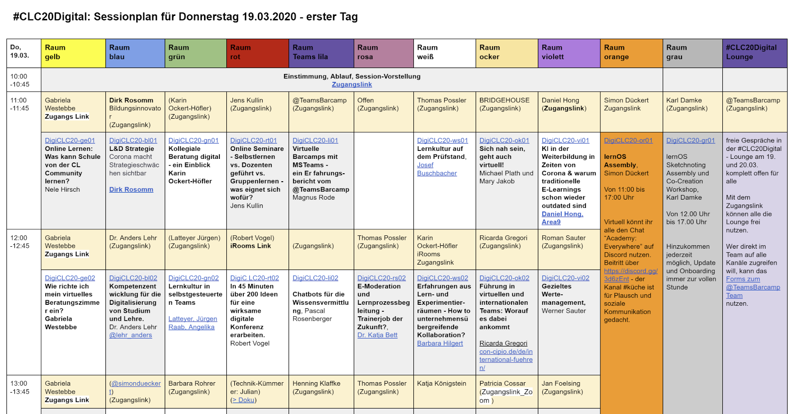
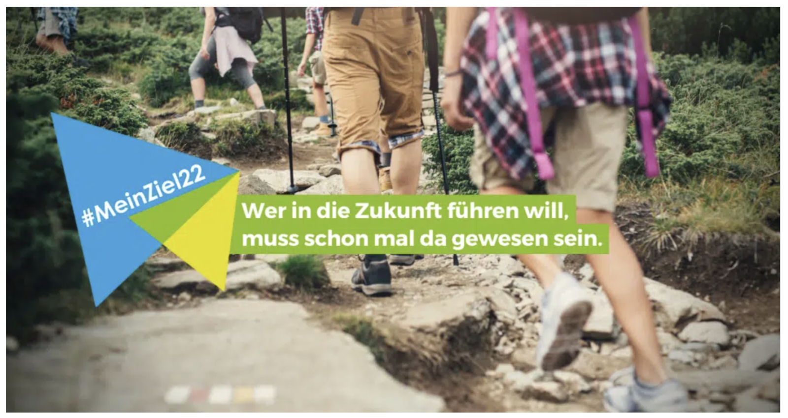
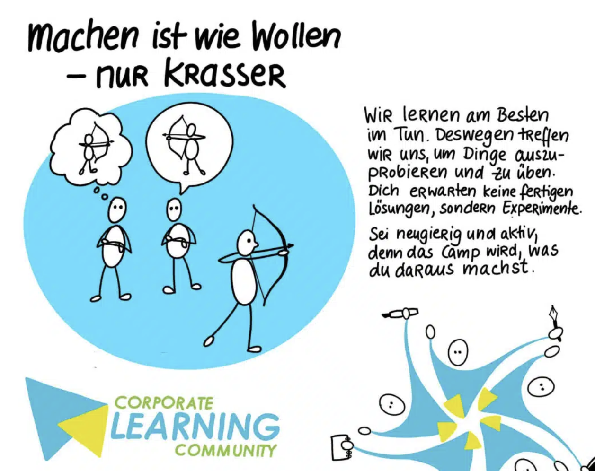
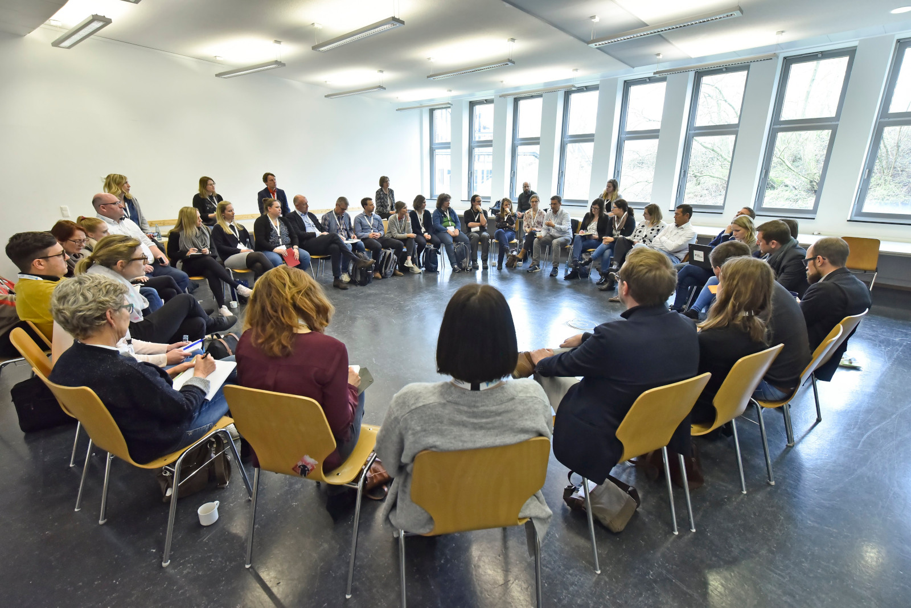

Von BarCamps bis Walk & Talks - Ein Überblick über die CLC Aktivitäten
Von BarCamps bis Walk & Talks: Ein Überblick über die CLC Aktivitäten
Autor: Jochen Robes
Warum ein Überblick?
Als wir uns über die Idee und die Inhalte eines Buchs über die Corporate Learning Community (CLC) unterhalten haben, hieß es irgendwann: „Wir können doch nicht einfach ein Buch über die CLC schreiben, ohne die Community und ihre wichtigsten Projekte vorzustellen! Gerade für die, die noch wenig von der CLC mitbekommen haben und die Schwierigkeiten haben, sich auf der Website schnell zurechtzufinden!"
Das macht natürlich Sinn. Das Buch und der Blick auf über 15 Jahre CLC ist dafür auch genau der richtige Platz. Und da ich als Gründungsmitglied der CLC auch von Anfang an dabei gewesen bin, will ich an dieser Stelle gerne dieser Aufgabe nachkommen. Auch wenn ich darauf hinweisen muss, dass auch ich nicht an allen Projekten und Aktivitäten teilgenommen habe, dass meine Darstellung Lücken haben wird (die hoffentlich einzelne Erfahrungsberichte der Community-Mitglieder in diesem Buch schließen können!) und dass es natürlich meine sehr persönliche Sicht auf diese Zeit darstellt.
Was ist die Corporate Learning Community eigentlich?
Auf unserer Website heißt es: „Die Corporate Learning Community ist ein nicht-kommerzielles Netzwerk von Corporate Learning Professionals. Unser Ziel ist es, Lernen in Organisationen neu zu gestalten, hin zu mehr selbstgesteuertem Lernen. Das erarbeiten wir uns, in dem wir Rahmenbedingungen für selbstgesteuertes Lernen gestalten und selbst ausprobieren."
Die CLC ist bis heute ein offenes, nicht-kommerzielles Netzwerk. Jede/r ist herzlich eingeladen, an den Projekten der CLC teilzunehmen und im Rahmen dieser Projekte aktiv zu werden. Wer an einem Event der Community teilnimmt, ist -- wenn er oder sie es möchte - Mitglied der CLC. Eine formale Anmeldung oder gar ein Mitgliederverzeichnis gibt es nicht.
Niemand in der CLC will mit diesen Projekten Geld verdienen; manchmal müssen anfallende Kosten gedeckt werden, aber das geschieht transparent und offen. Das heißt: Wer in der Community sich in Projekten engagiert und Aufgaben übernimmt, macht dies freiwillig und mit Blick auf die eigenen Interessen und Ressourcen. Das bedeutet natürlich auch, dass die Projekte oft eine eigene Dynamik und ihr eigenes Projektmanagement besitzen.
Wenn ich kurz beschreiben sollte, was die Corporate Learning Community auszeichnet, würde ich „Offenheit" und „Vertrauen" nennen. Offenheit zeichnet alle Projekte der CLC aus. Das beginnt bei der Teilnahme und endet (nicht) bei den Ergebnissen, Materialien und Medien, die, wann immer möglich, unter offenen Lizenzen geteilt werden. Vertrauen ist das Prinzip, das Karlheinz Pape immer wieder betont: Wer etwas unter dem Dach der CLC machen möchte, muss nicht auf die Zustimmung aller Beteiligten warten. Wir vertrauen einfach auf die Kompetenz und Einschätzung der Mitglieder. Aber auf die Community-Kultur der CLC komme ich später noch einmal zu sprechen.
Ich will an dieser Stelle darauf hinweisen, dass jeder Baustein unseres Selbstverständnisses immer wieder diskutiert und infrage gestellt wird. Hier ein kleiner Ausschnitt aus unseren wiederkehrenden Diskussionen:
-
Ist die CLC ein informelles Netzwerk oder eine Community of Practice?
-
Ist die Förderung des selbstgesteuerten Lernens unser Ziel, und wann haben wir es erreicht?
-
Wen wollen wir als Community eigentlich ansprechen, und wie machen wir das am besten?
-
Wie viel Struktur wollen wir vorgeben, und wie viele Freiräume braucht es, um als Community attraktiv zu bleiben?
Ich werde auf den nächsten Seiten die wichtigsten Projekte und Aktivitäten der CLC vorstellen. Dabei treffe ich, wie bereits gesagt, eine persönliche Auswahl. Vieles ist auch auf den Webseiten der CLC ausführlich dokumentiert und kann jederzeit nachgelesen werden.
Die Anfänge: Wie alles begann
Die Corporate Learning Community ist heute das größte Netzwerk von Learning Professionals im deutschsprachigen Raum. Auf LinkedIn umfasst die CLC-Gruppe über 11.000 Mitglieder (2025). Aber auch die CLC hat einmal klein angefangen. Im „lernOS on Air meets Corporate Learning Podcast" erzählt Karlheinz Pape im Gespräch mit Simon Dückert über diese Anfänge. Eine wichtige Wegmarke in der Entstehungsgeschichte war dabei das erste BarCamp der Corporate Learning Community, das 2011 in Darmstadt mit 80 Teilnehmenden stattfand. Die BarCamps sind bis heute der rote Faden, der sich durch die Geschichte der CLC zieht.
Im Rückblick lag auf dem Weg vom BarCamp zur Community noch ein weiterer Schritt: 2014 setzte sich eine Gruppe von Interessierten zusammen, um sich in einem Gründungspapier auf die Ziele, die Aktivitäten und die Zusammenarbeit in der zukünftigen Corporate Learning Community zu verständigen. Ein Kernteam bildete sich. Später, 2018, entstand zusätzlich die Gemeinnützige UG Corporate Learning Community (CLC gUG - haftungsbeschränkt) als rechtlicher Rahmen für die Abwicklung von Verträgen und Rechnungen.
2018 hatte die Corporate Learning Community aber bereits Fahrt aufgenommen. Neben den jährlichen BarCamps wurden weitere Projekte wie zum Beispiel die ersten Massive Open Online Courses mit verschiedenen Unternehmen als Partnern durchgeführt. Die wichtigsten dieser Projekte werden im Folgenden kurz vorgestellt.
Die BarCamps
Wenn ich auf die Aktivitäten der Corporate Learning Community der letzten Jahre zurückblicke, dann stehen die Corporate Learning Camps -- unsere CLCamps -- für mich sinnbildlich für das, was diese Community ausmacht: Offenheit, Teilhabe, Selbstorganisation und Vertrauen in das Potenzial von Peer Learning. Auf das erste BarCamp der CLC habe ich schon hingewiesen. Dass daraus eines der langlebigsten und prägendsten Formate der CLC werden würde, war zu diesem Zeitpunkt, 2011, nicht absehbar.
BarCamps, auch als „Unkonferenzen" bekannt, kehren die Logik klassischer Fachkonferenzen um. Es gibt keine vorab geplanten Vorträge, keine Keynotes, keine festgelegten Speaker. Stattdessen gestalten die Teilnehmenden selbst das Programm -- als „Teilgebende", wie es im BarCamp-Jargon heißt. Wer ein Thema einbringen möchte, stellt es kurz vor. Wenn Interesse besteht, wird es in den Sessionplan aufgenommen. So entsteht ein Lern- und Erfahrungsraum, der ganz auf den Austausch auf Augenhöhe setzt.
Seit 2011 finden die Corporate Learning Camps regelmäßig an wechselnden Orten in Deutschland statt. Die wachsende Nachfrage führte dazu, dass wir jährlich zwei BarCamps anboten, dann auch BarCamps, in Kooperation mit den dortigen CLC-Communities, in der Schweiz und in Österreich. Nach Corona gibt es wieder ein einziges BarCamp der CLC im Jahr.
Die BarCamp - Kultur hat sich im Laufe der Jahre tief in die DNA der CLC eingeschrieben. Besonders eindrücklich war für mich das erste große Experiment mit einem Online-BarCamp im März 2020, kurz nach Beginn der Corona-Pandemie. Das geplante BarCamp vor Ort an der TU Hamburg musste abgesagt werden. Stattdessen organisierten wir in wenigen Tagen das
CLC20Digital. Wir stellten den Sessionplan online, überließen die
technische Umsetzung den Sessiongeber:innen selbst und unterstützten, wo nötig, mit „Technik-Kümmerern". Die Resonanz war überwältigend: 450 Teilnehmende bei der Eröffnungssession, fast 100 Sessions an zwei Tagen, vielfältige Themen und Formate. Für viele war es das erste Online-BarCamp überhaupt -- und zugleich ein starkes Signal: Das Prinzip BarCamp funktioniert auch im virtuellen Raum.

Inzwischen sind wir bereits beim 24. Corporate Learning Camp angekommen, das am 13./ 14. März 2025 in Hamburg stattfand und zusammen mit NORDMETALL und der Beruflichen Hochschule Hamburg veranstaltet wurde. Das Motto des BarCamps lautete „Mehr Intelligenz ins Lernen!". Es war ein hybrides BarCamp, so dass die Besucher selbst entscheiden konnten, ob sie vor Ort oder online teilnehmen wollten. Es war zugleich ein weiterer Meilenstein in der CLC- und BarCamp-Geschichte, da zum ersten Mal die Moderation nicht von Karlheinz Pape, dem Gründer und langjährigen Mentor der CLC, sondern von seinen Nachfolgern übernommen wurde.

Die MOOCs
Ein cMOOC (konnektivistischer/ connectivism MOOC) ist das Gegenteil eines klassischen Online-Kurses mit vorgegebenem Lernpfad, Prüfungen und Zertifikat. Es geht nicht um eine Stoffvermittlung durch Expert:innen, sondern um den Austausch zwischen Lernenden auf Augenhöhe. cMOOCs bieten Impulse, offene Fragen, Live-Sessions, Möglichkeiten zur Reflexion -- aber keine „richtigen" Lösungen. Die Teilnehmenden entscheiden selbst, was sie mitnehmen. Organisiert werden cMOOCs meist von Moderatorinnen oder Gastgebern, die den Raum strukturieren, nicht füllen.
Unser erster MOOC, der #CL20, startete 2015 mit Beteiligung von Deutsche Bahn Training, Swisscom, ÖAMTC, Festo, Miele, Sick AG, SAP und Adidas. Seine Leitfrage lautete: „Wie gestalten wir künftig Lernen in Organisationen?" Jede Woche des MOOCs entwarf und moderierte ein anderes Unternehmen. Das Format überzeugte: Es meldeten sich über 1.600 Interessierte auf der Plattform des MOOCs an, und es entstanden lebendige Diskussionen, Blogbeiträge und Lerngruppen.
2017 folgte der Corporate Learning 2025 MOOCathon (#CL2025) als Kombination eines Massive Open Online Courses und eines Hackathons. Das Thema des #CL2025 lautete „Learning & Development in the Digital Age". Wieder moderierten über 10 Unternehmen jeweils eine Kurswoche und den Austausch mit der Community. Im Rahmen des Hackathons entwickelten anschließend ca. 30 Teilnehmende an drei Tagen in Frankfurt aus den Ergebnissen des MOOCs eine Vision für Corporate Learning: „Organisationales Lernen im Digitalen Zeitalter"\ .
![Eindrücke vom Hackathon 2017 (Quelle: Twitter, persönliches Archiv), Das Bild ist ein Screenshot von Twitter. Auf dem Bild sieht man eine
Collage von zwei Fotos und einen Text. Links hält ein Mann freudig ein
Buch hoch. Er lächelt und feiert das Ergebnis. Rechts steht eine große
Gruppe von Menschen vor einem Gebäude. Viele von ihnen tragen
Namensschilder. Im Text darüber steht: „Done -- Klasse, wir haben es
geschafft: Das 1. Exemplar unseres Wikibooks . Herzlichen Dank an die
KrasseHerde! CorporateLearning CL2025\"](../media/image23.png)
Das MOOCamp 2020 (#moocamp20) mit dem Motto „Lernräume gestalten -- offline, online und hybrid" fiel mitten in den ersten Corona-Frühling. Für viele war es deshalb ein willkommener Ankerpunkt, um sich mit den Herausforderungen digitaler Lernräume auseinanderzusetzen. Vier Unternehmen (Viessmann, ZF Friedrichshafen, Porsche und QualityMinds) gestalteten wieder jeweils eine Kurswoche. Es gab keine zentrale Plattform, sondern eine einfache Website, ergänzt durch Live-Sessions, Kommentare und die Aktivitäten in den sozialen Netzwerken. Über 1.200 Teilnehmende hatten sich für den begleitenden Newsletter angemeldet.
Den jüngsten MOOC 2024 (#CLMOOC24) gestaltete die CLC zusammen mit Spirit Link, DATEV, EnBW und der Techniker Krankenkasse. Sie teilten mit uns ihre Sicht auf das Thema „Future Learning Organization". Neben den bekannten Bausteinen des Formats wie zum Beispiel den regelmäßigen Live-Sessions gab es auch hier wieder eine Besonderheit: Im Anschluss an den #CLMOOC24 bildete sich eine Arbeitsgruppe, das AI-Lab der CLC, um die Inhalte und Ergebnisse des MOOCs mit Hilfe verschiedener KI-Tools weiter zu bearbeiten.
Die MOOCs der Corporate Learning Community sind aufwändige Groß-\ ereignisse (wir sprechen dann gerne von „Jahresprojekten"). Die von den Unternehmen und Organisationen moderierten Kurswochen bilden oft nur den Rahmen für viele weitere Teilprojekte und Aktivitäten: das reicht von weiteren Live-Sessions (lange Zeit: „Twitter als Lernwerkzeug") bis zu integrierten WOL-Zirkeln. Dadurch sind die MOOCs Beispiele gelebter Lernkultur: offen, unperfekt, einladend, praxisorientiert.
Die regionalen Communities der CLC
Die Idee der regionalen CLC-Communities entstand aus dem Wunsch, den offenen Austausch auch nach den jährlichen CLC BarCamps fortzusetzen. Viele Teilnehmende kehrten inspiriert von den Camps zurück in ihre Unternehmen und Organisationen und suchten nach Möglichkeiten, sich weiter auszutauschen. So bildeten sich ab 2017 nach und nach regionale Gruppen, zunächst informell, dann zunehmend als feste Anlaufstellen für lokale Treffen, Stammtische und Austauschformate.
Heute (2025) gibt es rund 15 bis 20 regionale CLC-Communities im deutschsprachigen Raum -- unter anderem in Rhein-Main, München, Hamburg, Stuttgart, Berlin, Leipzig, Köln-Bonn, Wien und Zürich\ . Sie werden in der Regel von mehreren Personen moderiert, die regelmäßig zu den Treffen vor Ort einladen. Die gelebte Praxis der regionalen Communities ist sehr unterschiedlich. Das betrifft den Turnus der Treffen, die Kommunikation der Termine und des Ablaufs sowie die Dokumentation. Oft laden die Mitglieder einer Community abwechselnd in die Räumlichkeiten ihrer Unternehmen ein. Oder es gibt Walk & Talks.
Einige Communities setzen auf thematische Impulse und eine kleine Agenda, andere laden ein, die Themen mitzubringen, über die man diskutieren möchte. Vieles geht, nur die Werbung für Produkte oder Dienstleistungen ist ausgeschlossen. Auch über die Größe der regionalen Communities kann nur spekuliert werden: Wer sich von einer Einladung angesprochen fühlt, ist herzlich willkommen. Das können je nach Community und Termin mal 20 Interessierte sein oder auch nur drei Unentwegte. Es kommt auch vor, dass die Moderator:innen einer Community ihr Engagement zurückfahren müssen und eine regionale Community pausiert.
Neben den regionalen Communities gibt es heute auch fachliche Communities, zu denen sich Mitglieder zusammengeschlossen haben, um langfristig bestimmte Themen wie „kollegiale Fallberatung" oder „Nachhaltige Organisation" zu diskutieren.
Die Corona-Pandemie, das muss an dieser Stelle noch erwähnt werden, bedeutete für die regionalen Corporate Learning Communities eine Zäsur. Die Treffen vor Ort waren nicht mehr möglich. Viele Communities ließen ihre Aktivitäten ruhen. Einige gingen hin und organisierten virtuelle Treffen, die dann natürlich für alle Interessierten deutschlandweit zugänglich waren. Der Zusammenhalt der regionalen Communities ging dadurch oft verloren. Viele regionalen Communities sind bis heute dabei, ihren Rhythmus und ihre Mitglieder (wieder-)zu finden.
Weitere Projekte der CLC im Überblick
In den letzten Jahren wurden in der Corporate Learning Community immer wieder einzelne, thematisch wie zeitlich begrenzte Projekte angestoßen. Oft sind es Mitglieder des Kernteams, die eine Initiative starten. Aber prinzipiell ist jede/r eingeladen, für eine Idee oder Aufgabe zu werben (zum Beispiel im Rahmen eines CLCamps) und Mitstreiter:innen zu suchen. Zwei Projekte sollen an dieser Stelle vorgestellt werden; weitere führe ich kurz auf.
#MeinZiel22
In der Projektbeschreibung heißt es: „Die Corporate Learning Community veranstaltet vom 17.01. -- 25.05.2022 die selbstorganisierte Lernreise #meinziel22, bei der alle Lern- und Wissbegierigen mitmachen und sich gemeinsam weiterentwickeln können. Ihr könnt euch selber ein Lernziel wählen und das alleine, zu zweit oder in der Lerngruppe über ein Quartal hinweg verfolgen. Zum Auftakt, zu zwei Boxenstopps und zum Abschluss gibt es eine gemeinsame Session für alle Teilnehmer:innen."
Unter dem Hashtag #MeinZiel22 lud die CLC ihre Mitglieder ein, persönliche Lernziele für das Jahr zu formulieren -- öffentlich und sichtbar. Ziel war es, individuelle Entwicklungsvorhaben mit einer gemeinsamen Lernerfahrung zu verbinden. Entstanden ist eine bunte Reihe von Erfahrungs- und Abschlussberichten. Hier ein kleiner Ausschnitt:
-
„Mein persönliches Lern- und Wissensmanagement verbessern"
-
„Meine 12 Zukunftskompetenzen herausfinden"
-
„Ein Handbuch für Mentoren und Mentees erstellen"
-
„Wie ein Metaverse4Learning aussehen könnte"
-
„Posts und Podcasts als interessante Stories darstellen"
-
„Kollegiales Lernen und psychologische Sicherheit verbinden"
Das Projekt zeigte, wie Selbstverpflichtung, Sichtbarkeit und Austausch das eigene Lernen beflügeln können. Die gesammelten Reflexionen boten einen wertvollen Einblick in Lernwege, Hürden und Erfolge -- und machten deutlich: Lernziele können auch ohne externe Vorgaben und Zertifikate motivierend wirken. Das Projekt wurde übrigens im folgenden Jahr noch einmal wiederholt (#MeinZiel23).

#CLCDoOO
Vom Projekt „Domain of One's Own" (DoOO) hatte Karlheinz Pape im März 2021 in einem Workshop von studiumdigitale, der zentralen eLearning-Einrichtung der Goethe-Universität Frankfurt, gehört. Und sich gefragt, ob das nicht auch für Corporate Learning Community und ihre Mitglieder ein interessantes Angebot sein könnte. Die zentrale Idee hinter DoOO ist die digitale Selbstbestimmung der Lernenden. Ursprünglich geht es darum, dass Studierende, Lehrende und Mitarbeiter:innen von ihrer Bildungsinstitution eine eigene Web-Domain samt Hosting erhalten.
Übertragen auf die CLC fragte sich Karlheinz Pape: „Ich fände es interessant zu erfahren, wie viele Learning Professionals einen eigenen WebSpace aktiv pflegen. Ich fürchte, es sind ganz wenige. Vielleicht sollten wir uns etwas einfallen lassen, um die Einstiegshürde ganz klein zu machen?"
CLCDoOO entwickelte sich wie viele CLC Projekte: Ein Aufruf zur
Teilnahme am Projekt wurde veröffentlicht, Interessierte meldeten sich, eine Arbeitsgruppe bildete sich, man stimmte Ziele, Aufgaben und Vorgehen ab und begann, sich regelmäßig zu treffen und auszutauschen. Die Ergebnisse des Projekts sind noch heute auf der Webseite der CLC abrufbar: eine „Anleitung für Anfänger:innen" (Nutzen der eigenen Domain, Auswahl des passenden Hosting-Anbieters, erste Schritte in WordPress). Weitere Maßnahmen wie zum Beispiel ein Hackathon sowie ein von der CLC gesponsertes Starter-Paket wurden angeboten, stießen allerdings nicht auf die erhoffte Resonanz. Auch das gehört zur Wirklichkeit einer offenen Community.
Kurzübersicht weiterer Projekte:
-
CLC Working Out Loud Circle (2017) : Fünf CLC-Mitglieder haben sich zu einem Working Out Loud-Circle zusammengeschlossen und ihren wöchentlichen Austausch öffentlich gemacht.
-
CLC Upskilling L&D (2018/19) : Ziel dieses Projekts war es, die zukünftigen Kompetenzen für Learning & Development-Rollen zu identifizieren. Es wurden erste Skill-Profile erarbeitet und in einer Online-Phase gemeinsam weiterentwickelt.
-
CLC Onboarding (2021) : Um neuen Mitgliedern den Zugang in die Community zu erleichtern, wurde ein Onboarding-Angebot entwickelt. Das Ergebnis umfasste fünf Informationspakete (Mails), die in denen sich die Corporate Learning Community vorstellt.

-
CLC Promptathon (2024) : Der CLC Promptathon fand am 24. April 2024 in Walldorf statt. Er war ein Angebot an HR- und Learning Professionals, sich mit den Möglichkeiten der KI praktisch auseinanderzusetzen. Dafür sollten Aufgaben aus der Arbeitswelt in Gruppen gelöst werden. Im Nachgang wurden die mit dem CLC Promptathon gesammelten Erfahrungen in einem Promptathon-Leitfaden festgehalten.
-
CLC AI Lab (2024/ 2025 ): Ziel des AI-Labs der Corporate Learning Community war es, die Inhalte und Medien aus dem MOOC 2024 mit Hilfe von KI für eine weitere Nutzung aufzubereiten. Die Themenfelder des AI Labs lauteten: Flipped Interaction Pattern, KI Coaching-Tools, Wissensmanagement, KI-Bildung, Lernökosysteme.

- CLC Welcome Lunch & Network/ CLC Inspire & Network (seit 2024) : Seit 2024 gibt es diese beiden Austauschformate. „Welcome Lunch & Network" will vor allem neuen CLC Mitgliedern in 30 Minuten die Corporate Learning Community vorstellen. „Inspire & Network" lässt sich etwas mehr Zeit (90 Minuten), um, oft mit Impulsgeber:innen und Interviewpartner:innen, einzelne Themen zu vertiefen und sich darüber auszutauschen. Beide Events finden auf der digitalen Dachterrasse der Plattform Remo statt.
Digitale Räume: Wo kommuniziert wird ...
Digitale Räume und der Austausch im virtuellen Raum prägen die Corporate Learning Community. Kein Wunder, wenn wir über Bildung und Lernen in digitalen Zeiten sprechen. Und doch keine Selbstverständlichkeit, wenn wir bis heute darüber diskutieren, wann wir uns vor Ort treffen wollen, wann wir ganz selbstverständlich eine Online-Session organisieren und wie wir mit hybriden Treffen den bekannten Modalitäten eine weitere Dimension hinzuzufügen.
Doch welche digitalen Begegnungs- und Austauschräume gibt es in der Corporate Learning Community?
Da ist zum einen unsere Webseite (www.colearn.de) mit ihren Blogposts, meist kurze Beiträge, die über Projekte, Events, Ereignisse sowie Themen aus der Welt des Corporate Learning informieren. Sie können von allen Community-Mitgliedern geschrieben und veröffentlicht werden. Heute (2025) umfasst der Blog über 690 Beiträge mit über 1.700 Kommentaren, die alle über die „Suche" erreichbar sind.
Über die Webseite ist auch der Corporate Learning Podcast aufrufbar -- mit über 180 Folgen. Das Thema Podcast wird vor allem von Karlheinz Pape und Simon Dückert gepflegt. Regelmäßig werden die Treffen der Corporate Learning Community genutzt, um mit den Mitgliedern der Community einzelne Folgen aufzunehmen oder Interessierte gleich in das Thema Podcasting einzuführen. So ist ein Podcast-Gesprächstisch ein fester Baustein der CLCamps.
Einmal im Monat lädt die Corporate Learning Community zu einer moderierten Online-Session ein. Der Titel dieses Formats wechselt immer wieder mal. Zuletzt waren Anja C. Wagner und Joachim Niemeier die Gastgeber der CLCLunch&Learn-Reihe. Ihr Schwerpunktthema bildeten zuletzt „Future Skills"/ „Zukunftskompetenzen". Kundige Referent:innen präsentieren dabei kurze Impulse zum Thema, die anschließend diskutiert und vertieft werden. An diesen Angeboten nehmen häufig weit über 100 Interessierte teil. Meist werden die Online-Sessions anschließend auf dem Blog der CLC zusammengefasst.
Die Corporate Learning Community, ich denke, dass kann man ohne Abstriche behaupten, ist mit Twitter großgeworden. Twitter war lange Zeit das zentrale Medium des Austauschs. Die Hashtags der CLC sowie der einzelnen Events wurden intensiv genutzt. Twitterwalls unterstützten den Austausch auf den CLCamps. Mit Twitter wurde experimentiert: So wurden mehrere Twitter-Chats organisiert, auf denen sich die Teilnehmenden jeweils eine Stunde lang zu vorher veröffentlichten Fragen und mit abgestimmten Hashtags austauschten. Die Session „Twitter als Lernbooster" bildete lange Jahre ein wiederkehrendes Angebot an die Community, sich mit dem Potenzial des informellen Lernens zu beschäftigen. Mit der Umwandlung von Twitter in „X" durch Elon Musk endete auch das Engagement der CLC auf diesem Kanal.
Seit ihrem Abschied von Twitter trifft sich die Corporate Learning Community auf Mastodon. Über 800 Mitglieder sind auf colearn.social, der selbstgehosteten Mastodon-Instanz der CLC, angemeldet. Mit der Präsenz auf Mastodon ist auch das Ziel verbunden, das Fediverse als Zusammenschluss voneinander unabhängiger sozialer Netzwerke zu stärken.
Nutzung und Popularität sozialer Netzwerke unterliegen einem stetigen Wandel, den auch die Corporate Learning Community zu reflektieren versucht. Während in den letzten Jahren Xing, Facebook und Twitter/ X an Bedeutung verloren haben, ist die Community auf LinkedIn\ stetig gewachsen. Sie umfasst derzeit (2025) über 11.000 Mitglieder. LinkedIn wird damit mehr und mehr zu einer zentralen Drehscheibe für Informationen, die Kommunikation in der Community und den regionalen Gruppen sowie die Vernetzung der Mitglieder.
Community-Kultur: Wie kommuniziert wird ...
Wenn ich an das Miteinander und den Austausch in der CLC denke, kommen mir verschiedene Worte in den Sinn: Offenheit, Selbstorganisation und Selbstverantwortung, Handeln und Experimente, Kollaboration, Vertrauen und Augenhöhe. Einige dieser Begriffe finden sich auch im Web auf den Seiten der CLC. Aber die meisten erschließen sich erst, wenn man aktiv an den Events und Projekten der CLC teilnimmt.
Selbstverantwortung und Selbstorganisation
Auch wenn es von außen nicht auf den ersten Blick zu erkennen ist: Es gibt in der CLC keine zentrale Organisation im klassischen Sinn, sondern ein Kernteam, das Impulse gibt, Formate unterstützt und für Austausch sorgt. Alles andere -- Themen, Projekte -- entsteht aus der Community heraus. Wer eine Idee hat, fragt im Blog oder in der LinkedIn-Gruppe -- und findet oft in kurzer Zeit Mitstreiter:innen. Die BarCamps sind dafür das beste Beispiel: Das Kernteam organisiert den Rahmen. Was und wie diskutiert wird, bestimmen die Teilnehmenden bzw. Teilgebenden. Dass diese Möglichkeiten noch viel zu selten wahrgenommen werden, steht auf einem anderen Blatt.
Doch die Selbstorganisation der Mitglieder ist kein Selbstläufer. CLC-Mitglied Martina Pumpat hat das in ihrem „Reisetagebuch" zum Upskilling-Projekt der CLC sehr schön beschrieben:
„Von unserer Seite war alles bestens vorbereitet -- das Abenteuer Up-\ skilling konnte losgehen! Und wir freuten uns auf die rege Beteiligung der Community -- aber das kam dann anders als gedacht ...
Und es passierte erstmal nichts ...
Sicher, ich hatte erste Ideen im Kopf, auch schon mal auf Slack reingeschaut, aber hauptsächlich habe ich gewartet. Auf die Selbstorganisation?! Mir ist erst im Rückblick bewusst geworden, was für gelernte Mechanismen da gewirkt haben -- trotz hoher Motivation, Interesse, Wissen und sogar ausreichend Zeit. Das „erstmal warten bis sich der Häuptling rührt" legt man wohl auch mit den besten Vorsätzen nicht so schnell ab. Dem Großteil der anderen schien es ähnlich zu gehen, denn wahrnehmbare Aktivitäten gab es erstmal so gut wie gar nicht."
Spielfläche zum Ausprobieren, Experimentieren und Handeln
Learning Professionals haben in der Corporate Learning Community die Möglichkeit, Konzepte, Methoden und Tools kennenzulernen und zu testen, bevor sie diese in der eigenen Organisation einführen. Es geht immer auch um unser Lernen und die Weiterentwicklung unserer Kompetenzen. Das drückt sich in verschiedenen Überschriften und Slogans aus, mit denen wir immer wieder für den „Experimentierraum" Corporate Learning Community werben. „Wer in die Zukunft will, muss schon mal da gewesen sein", hieß es in diesem Sinne bei der Einladung zum Projekt „#MeinZiel22".
„Auf die Spitze getrieben" haben wir unsere Kultur des Machens vielleicht auf dem Corporate Learning Practice Camp 2023 in Berlin:

Offenheit
Alle Projekte und Events sind offen und in der Regel kostenlos. Zuweilen braucht es aus organisatorischen Gründen eine Anmeldung. Ansonsten sind immer alle Interessierten eingeladen, sich zu beteiligen. Zu dieser Offenheit gehört, dass wir auch die Kommunikation teilen wollen, dass wir aufzeichnen, protokollieren und dokumentieren, wann immer es sinnvoll und möglich ist. Und diese Aufzeichnungen, Protokolle und Dokumentationen auch im Nachgang unter offenen Lizenzen (Creative Commons) der Community und der Öffentlichkeit zur Verfügung stellen. Das ist nicht selbstverständlich und manchmal für Mitglieder und ihre Organisationen gewöhnungsbedürftig. Zuletzt: Die Offenheit der CLC hat auch ihre Grenzen. Die Werbung für Produkte oder Dienstleistungen im Rahmen der Community-Aktivitäten ist verpönt.
Kommunikation auf Augenhöhe
Wenn wir unsere BarCamps anmoderieren, weisen wir Neuankömmlinge darauf hin, dass wir uns für die Dauer des Austauschs auf ein „Du" verständigen. Das prägt bis heute das Miteinander in der CLC. Es gibt keine Hierarchien. Man kann sich unabhängig von Rollen und Qualifikationen an allen Projekten der CLC beteiligen. Alle Beiträge in der Community zählen.
Wie gesagt, das gilt für die BarCamps, aber auch für alle anderen Peer Learning-Formate, die in der CLC umgesetzt werden: die offenen Online-Kurse (cMOOCs), die Learning Circles (WOL und lernOS), die Promptathons und natürlich den Austausch in den regionalen Communities.
Kurzer Ausblick
Wie jede Community muss sich auch die Corporate Learning Community selbst immer wieder auf den Prüfstand stellen. Damit sind bestimmte, wiederkehrende Fragen verbunden:
-
Sind unsere Ziele und unsere Vision noch aktuell und attraktiv?
-
Wie können wir die Veränderungen reflektieren, denen unsere Themen (Corporate Learning) und Zielgruppen (Learning Professionals) unterliegen?
-
Sprechen unsere Events, Projekte und Aktivitäten noch unsere Mitglieder (und solche, die es werden wollen) an?
-
Wie können wir neue Mitglieder ansprechen? Wie können wir junge Zielgruppen für die CLC begeistern?
-
Wie können wir Mitglieder motivieren, in der CLC Rollen und Aufgaben zu übernehmen?
Die Antworten auf diese Fragen sind nicht Thema dieses Überblicks. Aber sie werden natürlich diskutiert. Gerade in diesen Zeiten. Hinzu kommt eine weitere Zäsur: Karlheinz Pape, der Gründer und langjährige Mentor der CLC, hat den Staffelstab an seine Nachfolger übergeben. Das war natürlich auch ein Anlass, auf die fünfzehn Jahre CLC zurückzublicken. Und es wird die Community natürlich verändern und weiterentwickeln.
